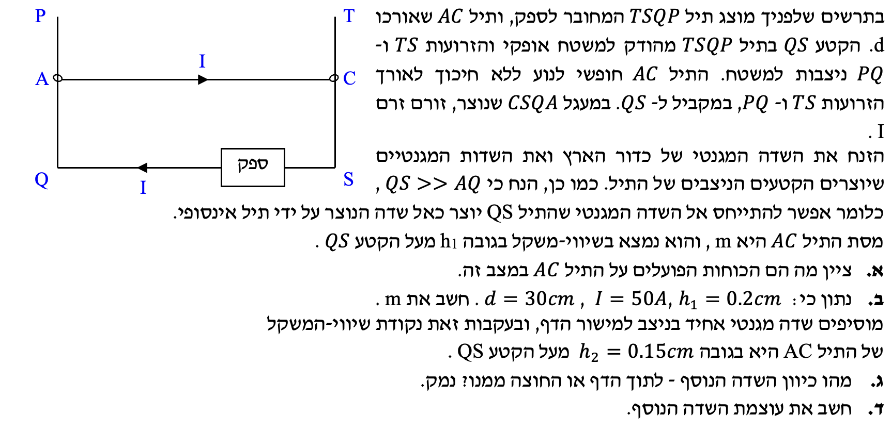

תלמידים יקרים, בפתרון זה ננתח מערכת של שני תיילים מקבילים נושאי זרם. נעבוד מסודר: נרכז נתונים בכל סעיף, נמיר יחידות לשיטה הסטנדרטית (MKS), ונסתמך אך ורק על דף הנוסחאות המאושר.
vervAUTO|auto
נוסח השאלה

תמונת השאלה המקוריתלא נמצאה תמונה בשם question-image.png באותה תיקייה.
סעיף א': ציון הכוחות הפועלים על התיל AC
מה נתון:
נתון כי התיל העליון $AC$ מרחף באוויר ונמצא במצב של שיווי משקל.
מה מחפשים:
את רשימת הכוחות שפועלים על התיל $AC$ ואת כיווניהם.
נוסחאות מהדף:
\(\Sigma F = 0\)
הצבה ופתרון:
מכיוון שהתיל בשיווי משקל ואינו מאיץ ($\Sigma F_y = m \cdot a_y$, כאשר $a_y = 0$), סכום הכוחות הפועלים עליו לאורך הציר האנכי חייב להתאפס. הכוחות הפועלים על התיל הם:
כוח הכובד ($W$ או $F_g$): פועל תמיד כלפי מטה (לכיוון מרכז כדור הארץ).
כוח מגנטי הדדי ($F_B$): כדי שהתיל לא ייפול, חייב לפעול עליו כוח הדוחף אותו כלפי מעלה ומאזן את משקלו. כוח זה נובע מהשדה המגנטי שיוצר התיל התחתון $QS$.
מדוע נוצר כוח דחייה בין התיילים? נשים לב שזרם אחד זורם ימינה והשני שמאלה. כאשר זרמים בשני תיילים מקבילים זורמים בכיוונים מנוגדים, הכוח המגנטי ההדדי ביניהם הוא תמיד כוח דחייה. התיל התחתון דוחה את התיל העליון כלפי מעלה!
על התיל AC פועלים כוח הכובד (כלפי מטה) והכוח המגנטי מן התיל התחתון (כלפי מעלה).
שימו לב: תאוצת הכובד $g$ היא תמיד גודל חיובי ושווה ל-$10\\,m/s^2$. הסימן נקבע אך ורק על פי כיוון הציר שבחרנו במערכת הצירים שלנו. נבחר ציר y חיובי כלפי מעלה. מכיוון שהתיל במנוחה (גודל המהירות אינו גדל ואינו קטן), התאוצה $a_y$ שווה לאפס.
הצבה ופתרון:
נרשום את החוק השני של ניוטון עבור גוף AC על ציר ה-y (כיוון חיובי מעלה):
$$ \Sigma F_y = m \cdot a_y $$
$$ F_B - m g = 0 $$
$$ F_B = m g $$
כעת, נפתח את הביטוי לכוח המגנטי $F_B$. תחילה נמצא את השדה המגנטי $B$ שיוצר התיל התחתון במיקום של התיל העליון (במרחק $r=0.002\\,m$):
$$ B = \frac{2 \cdot 10^{-7} \cdot 50}{0.002} = \frac{10^{-5}}{0.002} = 5 \cdot 10^{-3} \, T $$
נציב את השדה לתוך נוסחת הכוח המגנטי. הזווית $\alpha$ בין כיוון הזרם בתיל לכיוון השדה המגנטי היא $90^\circ$ (לפי כלל יד ימין, השדה שמייצר התיל התחתון נכנס לתוך הדף במיקום של התיל העליון), ולכן $\sin(90^\circ) = 1$:
$$ F_B = I \cdot L \cdot B \cdot \sin(90^\circ) $$
$$ F_B = 50 \cdot 0.3 \cdot 5 \cdot 10^{-3} \cdot 1 = 15 \cdot 5 \cdot 10^{-3} = 75 \cdot 10^{-3} = 0.075 \, N $$
כעת נחזור למשוואת שיווי המשקל ונחלץ את המסה ($g=10\\,m/s^2$):
$$ m g = F_B $$
$$ m \cdot 10 = 0.075 $$
$$ m = 0.0075 \, kg $$
מסת התיל היא $m = 0.0075\\,kg$ (שהם $7.5$ גרם).
סעיף ג': כיוון השדה המגנטי החיצוני
מה נתון:
כעת התיל נמצא בשיווי משקל בגובה חדש וקטן יותר: $r_{new} = h_2 = 0.15\\,cm = 0.0015\\,m$.
מה מחפשים:
את כיוונו של שדה מגנטי חיצוני אחיד שיש להפעיל כדי לשמור על התיל בשיווי משקל בגובה החדש.
הצבה ופתרון (ניתוח קונספטואלי):
כאשר המרחק בין התיילים קטן (מ-$0.2\\,cm$ ל-$0.15\\,cm$), השדה המגנטי שהם מפעילים זה על זה מתחזק, ולכן גם כוח הדחייה המגנטי כלפי מעלה ($F_B$) גדל. כעת הכוח המגנטי הדוחף כלפי מעלה גדול ממשקלו של התיל ($mg$).
כדי שהתיל לא יעוף למעלה ויישאר בשיווי משקל, עלינו להוסיף כוח מגנטי חיצוני שפועל כלפי מטה ($F_{ext}$).
כיצד נקבע את כיוון השדה בעזרת כלל יד ימין (כף היד)?
1. הזרם בתיל AC (האגודל) - מצביע ימינה.
2. הכוח המבוקש מהשדה החיצוני (כף היד) - צריך לדחוף כלפי מטה.
כדי שכף היד תפנה מטה והאגודל ימינה, האצבעות שלנו חייבות להצביע החוצה מן הדף (אלינו).
כיוון השדה המגנטי החיצוני הנוסף הוא החוצה מן הדף (מאונך למישור הדף ואלינו).
כיוון הזרם והאורך נשארו זהים: $I = 50\\,A$, $L = 0.3\\,m$
מה מחפשים:
את הגודל של השדה המגנטי החיצוני $B_{ext}$.
נוסחאות מהדף:
\( \Sigma F = 0 \)
\( F = I L B \sin\alpha \)
הצבה ופתרון:
שלב 1: נגדיר מחדש את משוואת שיווי המשקל. הפעם, פועלים שלושה כוחות. נבחר שוב ציר y חיובי כלפי מעלה. הכוח המגנטי מהתיל התחתון ($F_{B,new}$) פועל מעלה, ואילו כוח הכובד ($mg$) והכוח מהשדה החיצוני ($F_{ext}$) פועלים מטה:
$$ \Sigma F_y = 0 $$
$$ F_{B,new} - m g - F_{ext} = 0 $$
$$ F_{ext} = F_{B,new} - m g $$
שלב 2: נחשב את הכוח המגנטי החדש הדוחף כלפי מעלה בגובה $0.0015\\,m$: